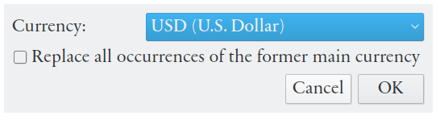
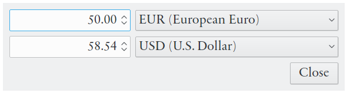

Table of Contents
Eqonomize! support per account currencies. A different currency can be selected for each account (for assets and liabilities).
The main currency determines the default currency for new accounts and the currency used for statistics. By default the main currency is set to the system wide local currency. Use → to change the main currency. A dialog is then shown, where you can select a new main currency, with the option to change the currency of all accounts using the previous main currency.
|  |
The currency of an account is selected in the dialog for account creation/editing. It is generally not advisable to change the currency of an account with associated transactions. This will leave the numerical value of associated transactions unchanged, but the actual monetary value might radically change.
The sum of values from accounts in different currencies and the total value and change of categories (for example in the accounts view, or in the statistical reports and diagrams) will be shown in the main currency. By default the main currency is set to the currency of the system default location, but this can be changed from the settings menu, or in the edit dialog of each currency.
For transfers between accounts with different currencies both withdrawn and deposited amount must be specified. The same is true for loan payments (reductions) where the loan is in a different currency from the account used for the payment. Conversion losses are not treated as expenses and are thus not included in statistics for expenses and profits.
Included exchange rates support automatic exchange rate updates If multiple currencies are in use, the exchange rates are automatically updated once every week, but they can also be updated using the → .
If a currency you use is not available you can add it manually using the top item in currency menu when creating a new or editing a present account (it can also be done from main currency selection window). You must specify the three letter code of the currency and you should enter an exchange rate in European euros. The currently selected currency of the account can be edited using the button directly under the currency menu. The exchange rate will not be updated automatically.
Eqonomize! saves, but does not download, historical exchange rates. It is not obvious which exchange rate should and is used when converting the value of transaction to a different currency, for display. In the account view, the exchange rate nearest the current end date (of the displayed period) is always used for the sum of assets and liabilities.
For expense and income categories, however, their are two options (selectable from the Settings menu) available. The first option is to use the appropriate exchange rate for the date of each separate transaction. The second default option is to simply use to current exchange rate, regardless of the transaction date (or the current end date). The same logic is used in the transaction lists for transactions using multiple currencies, as well as in different statistics (with the exception of historical account values). None of the options are optimal and which one is more appropriate depends on the typical flow between accounts in different currencies. This is however of minor importance for stable currencies.
You can quickly convert between different currencies by using the currency converter ( → ). Select currencies for conversion in the drop-down menus on the right and enter a value in one of the fields to the left. The value is converted as you type.
|  |
It is also possible to do currency conversion in every value field elsewhere in the application (see the section called “The Value Input Field”).